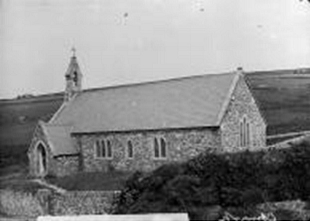
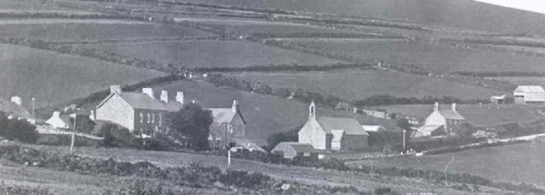

L’église Saint James
Vue de l’église Saint-Jacques vue du côté sud du villageL’église a été consacrée à St James en 1882. Avant cette année-là, la messe avait lieu à L’École Nationale de Llithfaen. Il parait que les villageois allaient à la messe juste pour écouter les histoires de revenants du Reverend Michael Jones. L’école du dimanche était bien frequentée et populaire dans les années 1950 car l’on y offrait des bonbons aux enfants!
Une photographie plus proche de l’église St James